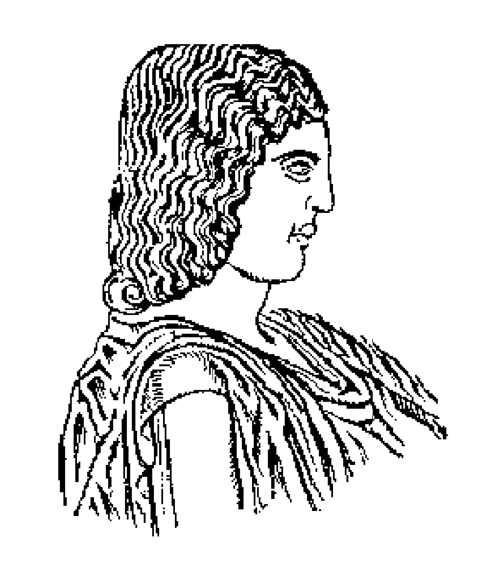

About
I hold a degree from the Agricultural University of Athens, where my thesis in mosquito ecology allowed me to connect agricultural and entomological experiments with my passion for mathematics. This combination sparked my curiosity for ecological modeling, as a way to extend experimental findings into quantitative frameworks for understanding biological systems. I do not aim to become strictly an entomologist or a statistician; rather, I see myself as someone closer to the role of an ecologist, using advanced quantitative and computational tools to uncover and interpret ecological phenomena.
Recently, I will begin the MSc in Statistics (2025–2026), with courses such as Computational Statistics, Generalized Linear Models,Statistical Machine Learning, Bayesian Models in Statistics, and Applied Stochastic Modeling. These studies are not an end in themselves, but a step that brings me closer to my real interest: ecological modeling. I want to develop skills in Python-based simulation, mathematical biology, and advanced modeling approaches that I consider essential for exploring ecological systems.
Because mosquitoes are vectors of major epidemiological importance, my interest in ecological modeling has also led me to develop a strong interest in biostatistics and epidemiological models as alternative directions for exploring public health. In addition, I remain open to potential applications in clinical research, where quantitative methods provide valuable insights into medical and epidemiological questions.
Education
I completed my undergraduate studies at the Agricultural University of Athens, Department of Crop Science. My thesis focused on mosquito ecology with a particular emphasis on Aedes species.
Agricultural University of Athens, Department of Crop Science
Publications
“Overwintering survival of adults of Aedes albopictus and Aedes cretinus (Diptera: Culicidae) in a sheltered microclimate in northern Attica, Greece.”
Conferences
Current Plans
My plan—if it works out—is to connect my MSc thesis to mosquito datasets. In parallel, I’d like to work with biostatistics and data from clinical studies, including biostatistical collaborations with clinical research organizations (CROs) as a complementary direction.
Aedes Cretinus
Aedes (Stegomyia) cretinus, Edwards 1921
Both images represent females of Aedes (Stegomyia) cretinus native species.
New Findings in Aedes cretinus Ecology !!!
- The better overwinter survival of Aedes cretinus adults may explain aspects of the ecology of the two species, especially in northern, colder and wooded areas, where Ae. cretinus seems to appear earlier.
- In this study, we investigated the overwintering capacity of Ae. albopictus and Ae. cretinus adults under semi-field, sheltered microclimatic conditions in northern Attica, Greece, during the winter of 2023–2024.
- Our findings revealed that 11% of Ae. albopictus females and 21.1% of Ae. cretinus females were capable of overwintering, highlighting the importance of sheltered microclimates for survival under low outdoor temperatures.
- In contrast, males of both species failed to overwinter.
- The winter survival ability of adults was significantly greater in Ae. cretinus than in Ae. albopictus.
- Nevertheless, the ability of Ae. albopictus females to also overwinter under the same sheltered conditions may affect the potential for interspecific competition in these areas.
📌 General
- Black-and-white striped tree-hole mosquito.
- First described in 1921 (Crete, Greece – Amari, Rethymno) by Edwards.
- Named cretinus after Crete (Latin: Creta).
- Considered the “Mediterranean representative” of Aedes albopictus due to morphological similarities. li>Member of subgenus Stegomyia, closely related to the invasive Ae. albopictus.
🌍 Geographic Distribution
- Native to Greece, also reported in Cyprus, Turkey, Georgia, and Lebanon.
- Primarily found in vegetated, wooded, and rural habitats within urban, peri-urban, and countryside settings.
🧬 The Three Basic Differences (Ae. cretinus vs. Ae. albopictus)
- Dorsal scutum line
- Ae. cretinus: white median + 2 submedian lines (clear, halfway down).
- Ae. albopictus: submedian lines very short & faint.
- Lateral scutum pattern
- Ae. cretinus: continuous white lateral line.
- Ae. albopictus: all black scales in that area.
- Tarsal claws
- Ae. cretinus: toothed claws (fore & mid legs).
- Ae. albopictus: simple, untoothed claws.
🦟 Biology & Ecology
- Anthropophilic (feeds on humans), aggressive daytime biter.
- Exophagic & exophilic – bites and rests mostly outdoors.
- Breeding sites include:
- Tree holes, ground pools, potholes.
- Flowerpots, dishes, barrels.
- Road drains, used tires.
- In Greece, larvae often collected from small natural or artificial containers.
- Documented in shaded areas (Russia), woods/fields/road edges (Turkey), semi-urban vegetated sites (Greece), and restaurant yards (Cyprus).
🕑 Activity (old data before Ae. albopictus established in Greece)
- Reported biting from spring to autumn.
- Oviposition observed from early spring through summer–early autumn.
- Activity observed for about 9 months of the year.
🧪 Medical Importance
- Current vector competence unknown.
- No confirmed evidence of pathogen transmission.
- Still considered of potential concern due to its close relation to Ae. albopictus.
⚔️ Competition with Aedes albopictus
- Populations of Ae. cretinus declined sharply in Greece after the invasion of Ae. albopictus.
- In Attica, Ae. cretinus was widespread before 2008, but became scarce after Ae. albopictus established.
- Laboratory studies show Ae. albopictus has a competitive advantage (cross-mating, larval competition).
🇬🇷 Historical Records in Greece according to surveys
- 1921 – First description in Crete (Edwards).
- 1990s – Found in northern Attica, biting aggressively outdoors.
- 2000–2002 – Oviposition activity in Attica (March–December).
- 2003–2004 – Ae. albopictus first reported in Greece (Corfu).
- 2004–2005 – Ae. cretinus detected in Attica (Pallini, Kifissia, Athens), Evia and Crete.
- 2007–2008 – Ae. cretinus reported in vegetated streamside areas in Attica.
- 2008 – Ae. albopictus detected for the first time in Athens; Ae. cretinus populations begin to decline.
- 2009–2011 – Ae. cretinus still present in Attica (mainly vegetated areas) and also reported in Crete, Macedonia and Peloponnese via citizen samples, but much lower than Ae. albopictus.
- 2010s – Rarely recorded in Attica; largely absent from intensive surveys, showing displacement by Ae. albopictus.
- 2014–2018 – Extensive LIFE CONOPS surveillance in Attica (BG-sentinel and oviposition traps) found no Ae. cretinus.
- 2017–2020 – Crete (Chania & Rethymno): detections from citizens and traps, very low densities.
- 2018 – Leros (Dodecanese): few eggs detected in oviposition traps.
- 2021–2023 – Sporadic detections again in Attica (Melissia – Penteli, Afidnes – Oropos, Vravrona – Markopoulo).
- 2023 – Preveza (Western Greece): citizen report via Mosquito Alert.
🦟 Aedes cretinus in Attica (2021–2022)
- Detected during a two-year survey, alongside other Aedes species.
- Found in only a few locations, at very low densities compared to Ae. albopictus.
- Classified among the less common species in Attica.
ℹ️ Other Information
- Ae. cretinus present in Greece & Turkey since the 1990s.
- Seasonal activity (approx. summarize from 3 studies): April–September, peak June–August.
- Before 2003 (Greece) and 2011 (Turkey), often recorded without albopictus.
🇹🇷 Aedes cretinus in Türkiye 2012-2021 long mosquito survey
- First records: Antalya (1980s–2000).
- New study (2012–2021): Found in Mediterranean, Aegean & Marmara regions.
- Confirmed provinces: Osmaniye, Adana, Mersin, Antalya, Muğla, İzmir, Manisa, etc.
- Breeding sites: tree holes (plane, oak, walnut, cedar) + small containers & tyres.
- Seasonality: Active May–September.
📍 Ae. cretinus in Belek–Turkey 1997 study
- 10.7% of total catch.
- Season: Active May–June, disappears after July.
- Activity: Peaks evening (18:00–22:00) + midnight (24:00–02:00).
📉 Conservation & Monitoring
- Outcompeted by Ae. albopictus in overlapping habitats.
- Continuous surveillance needed to assess persistence in Greece.
♀ Female Morphology
- Proboscis:
- Completely dark-scaled.
- Palps:
- About ¼ the length of the proboscis.
- Whitish scales dorsally on the apical half.
- Dark scales ventrally.
- Head:
- Clypeus bare.
- Pedicel with anterior white scales.
- Vertex with a broad median stripe of broad white scales.
- Occiput with a lateral stripe of broad white scales and extensive broad white scaling below.
- All dark scales are broad and flat.
- Eye margin with narrow white scales.
- Erect forked scales are dark.
- Scutum:
- Narrow dark scales overall.
- White acrostichal stripe extending from anterior margin to prescutellar area, forking and ending just before the scutellum.
- Narrow dorsocentral white stripes on posterior scutum.
- Lateral prescutal stripe of narrow white scales reaching the scutal angle.
- After a minute break it continues with broad white scales.
- Terminates with a few narrow white scales just before the margin of the lateral lobes of the scutellum.
- Scutellum:
- Broad white scales on all lobes.
- Small apical dark patch on the mid-lobe.
- Pronotum & pleura:
- Ante- and postpronotum largely covered with broad white scales.
- Pleurites with several patches of broad white scales, some very densely scaled.
- Wings:
- Dark-scaled with a conspicuous pale basal spot on the costa.
- Legs:
- Foreleg: Fore femur anteriorly with sparse white basal scales on the basal half + small white knee spot; posteriorly white; tibia dark; tarsomeres I–II with basal white rings, III–V dark.
- Midleg: Femur dark anteriorly except for a few white scales at the base + conspicuous white knee spot; tibia dark; tarsomeres I–II with basal white rings, III–V dark.
- Hindleg: Femur anteriorly white almost to the apex + conspicuous white knee spot; tibia dark; tarsomeres I–III with basal white rings, IV with an extreme dark tip, V white.
- Abdomen:
- Terga II–IV with narrow white basal bands, slightly constricted in the middle and not connected to the broad lateral white patches.
- Sterna II–IV largely white-scaled; sterna V–VII with basal white bands.
📚 Greek Major Contributions to the Research of Aedes cretinus
- Dr Athanasios Giatropoulos – Agronomist-Entomologist, Researcher
- Dr Ilias Kioulos – Agronomist-Field Based Entomologist
- Professor Georgios Koliopoulos– Medical and Veterinary Entomology
- Dr Angeliki (Kelly) Martinou – Ecologist, Principal Investigator
- Dr Antonios Michaelakis – Head Research Scientist
- Professor Eleni Patsoula – Parasitology, Entomology & Public Health
- Dr Anna Samanidou-Voyadjoglou (1946–2009) – Senior Lecturer
📑 Papers related to Ae. cretinus
- Caglar S.S., Alten B., Bellini R., Simsek F.M. & Kaynas S. (2003): Comparison of nocturnal activities of mosquitoes (Diptera: Culicidae) sampled by New Jersey light traps and CO2 traps in Belek, Turkey. J. Vector Ecol. 28: 12–22.
- Bisia M., Balatsos G., Sakellariou Sofianou M., Beleri S., Tegos N., Zavitsanou E., Karras V., Kollia D., Michaelakis A. & Patsoula E. (2025): Two-Year Entomological Survey of Mosquito Fauna in the Attica Region, Greece: Species Composition. Insects. 16: 406.
- Becker N., Petrić D., Zgomba M., Boase C., Madon M.B., Dahl C. & Kaiser A. (2020): Mosquitoes: Identification, Ecology and Control. Springer Nature, Cham, 570 pp. (pp. 264–265).
- Giatropoulos A., Michaelakis A., Koliopoulos G. & Pontikakos C.M. (2012b): Records of Aedes albopictus and Aedes cretinus (Diptera: Culicidae) in Greece from 2009 to 2011. Hell. Plant Prot. J. 5(2): 49–56.
- Giatropoulos A., Papachristos D.P., Koliopoulos G., Michaelakis A. & Emmanouel N. (2015): Asymmetric mating interference between two related mosquito species: Aedes (Stegomyia) albopictus and Aedes (Stegomyia) cretinus. PLoS One 10(5): e0127762.
- Giatropoulos A., Papachristos D., Michaelakis A., Kapranas A. & Emmanouel N. (2022): Laboratory study on larval competition between two related mosquito species: Aedes (Stegomyia) albopictus and Aedes (Stegomyia) cretinus. Acta Trop. 230: 106389.
- Kioulos I., Michaelakis A., Kioulos N., Samanidou-Voyadjoglou A. & Koliopoulos G. (2014): Mosquito (Diptera: Culicidae) fauna in natural breeding sites of Attica basin, Greece. Hell. Plant Prot. J. 7: 31–34.
- Martinou A.F., Vaux A.G.C., Bullivant G., Charilaou P., Hadjistyllis H., Shawcross K., Violaris M. & Medlock J. (2016): Rediscovery of Aedes cretinus (Edwards, 1921) (Diptera: Culicidae) in Cyprus, 66 years after the first and unique report. J. Eur. Mosq. Control Assoc. 34: 10–13.
- Martinou A.F., Fawcett J., Georgiou M., Angelidou I., Philippou M. & Schaffner F. (2021): Occurrence of Aedes cretinus in Cyprus based on information collected by citizen scientists. J. Eur. Mosq. Control Assoc. 39: 31–38.
- Patsoula E., Samanidou-Voyadjoglou A., Spanakos G., Kremastinou J., Nasioulas G. & Vakalis N.C. (2006): Molecular and morphological characterization of Aedes albopictus in northwestern Greece and differentiation from Aedes cretinus and Aedes aegypti. J. Med. Entomol. 43: 40–54.
- Giatropoulos A., Balatsos G., Lytra I., Karras V., Koliopoulos G., Papachristos D. & Michaelakis A. (2024): Records of Aedes (Stegomyia) cretinus in Greece before and after the invasion of Aedes (Stegomyia) albopictus (Diptera: Culicidae). Eur. J. Entomol. 121: 199–205.
- Şimşek F.M., Yavaşoğlu S.İ. (2023): Distribution of Aedes (Stegomyia) cretinus in Türkiye. Turkiye Parazitol Derg. 47(2): 117–123. doi:10.4274/tpd.galenos.2023.72692.
© — Aedes cretinus 2025
New 1
Type here...
New 2
Type here...
Type here...
New 3
Type here...
Type here...